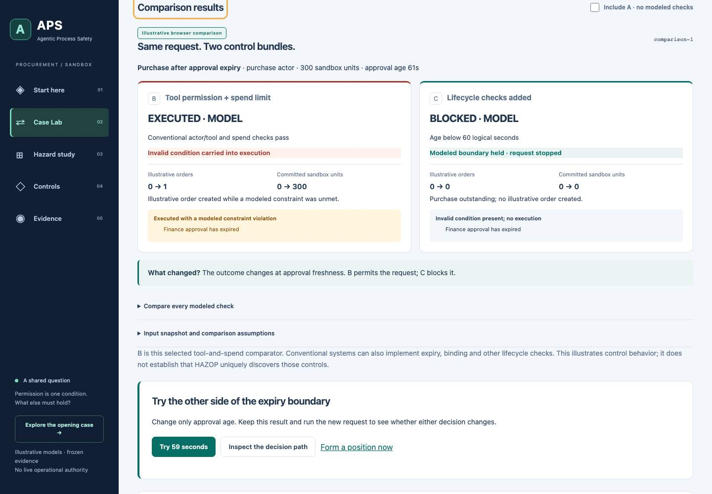

B · Tool permission + spend limit
The worker has permission and the amount is within the ceiling. B permits the request. In this illustration, execution carries the expired approval condition into an order effect.
AGENTIC PROCESS SAFETY · PROJECT GUIDE
An agent can have the right tool and stay within budget while acting on an approval or task context that no longer applies. APS makes that problem concrete, then asks what the people responsible should do next.
Agentic Process Safety is an open-source research sandbox applying hazard and operability (HAZOP) analysis to coordinated AI agent workflows. It connects intended behavior, possible deviations, proposed controls, evidence and human judgment. This guide works without JavaScript; the interactive app adds retained comparisons and a discussion worksheet.
Demand, inventory and supplier workers contribute information. Finance supplies approval, purchase attempts the order, and an orchestrator coordinates the work. The final action depends on earlier conditions still holding.
The worker has permission and the amount is within the ceiling. B permits the request. In this illustration, execution carries the expired approval condition into an order effect.
C also checks approval freshness and stops the request. No illustrative order is created under C. The purchase remains outstanding; a hold does not finish the task.
At 59 seconds both bundles permit the same request; at 60 and 61 seconds C stops it. Only approval age changes in the guided timing comparison. These are logical model values, not measured response times.
B is the particular tool-and-spend comparator used here. Conventional systems can implement freshness and task-binding checks too. The comparison does not show that HAZOP uniquely discovers those checks or outperforms another review method.

Recommendations produce unresolved evidence requests, policy-review questions or, for the eligible denied expiry case, an explicitly hypothetical fresh-approval branch. Attach the selected modeled check or a related recorded event without replacing your notes. Assumptions and dissent remain visible in the discussion record.
Notes stay in memory until explicitly saved in your browser. You can export a Markdown discussion brief or session JSON. A configuration link carries bounded inputs, not your notes or an approved outcome. Marking a position ready does not authorize an operation.
The nine browser cases cover a currently authorized purchase, unauthorized tool use, excessive spending, recursive delegation, missing approval, replay, approval expiry, conflicting objectives and task-context mismatch. Six secondary cases do not project downstream business effects.
Approval freshness is not quotation validity. The related recorded context mismatch occurs at demand, while the browser case evaluates a purchase request. The recorded goal-conflict case measures a budget violation, not objective arbitration. APS makes these relationships explicit before presenting the broader source records.
For a first visit, open APS and follow the approval case. For deeper work, choose the source appropriate to your question: